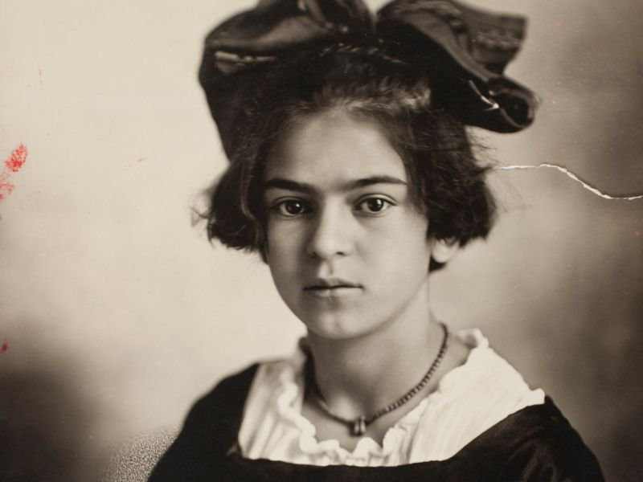
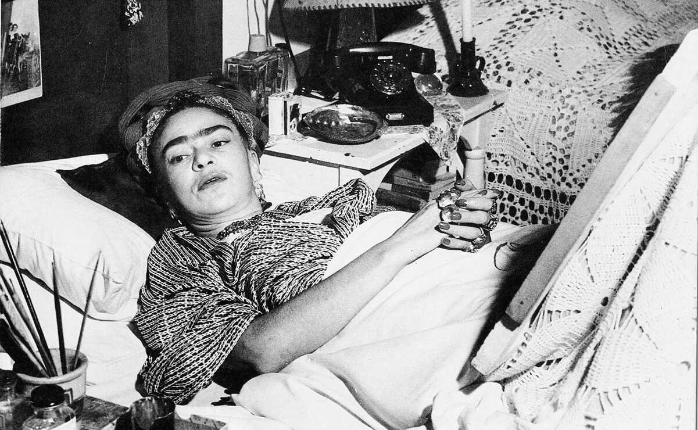
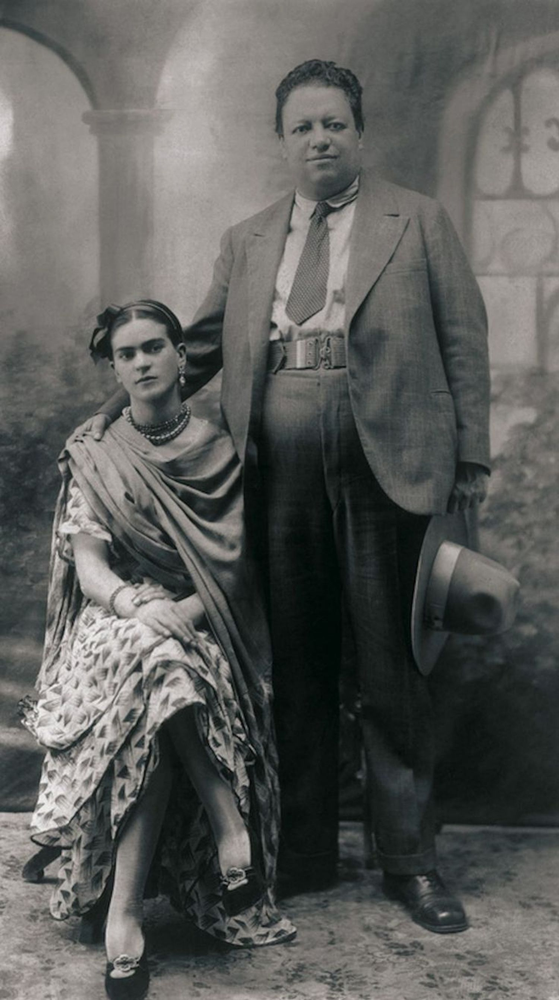
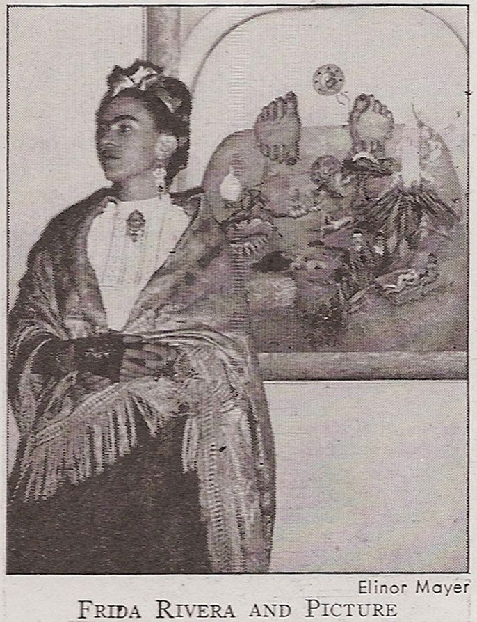
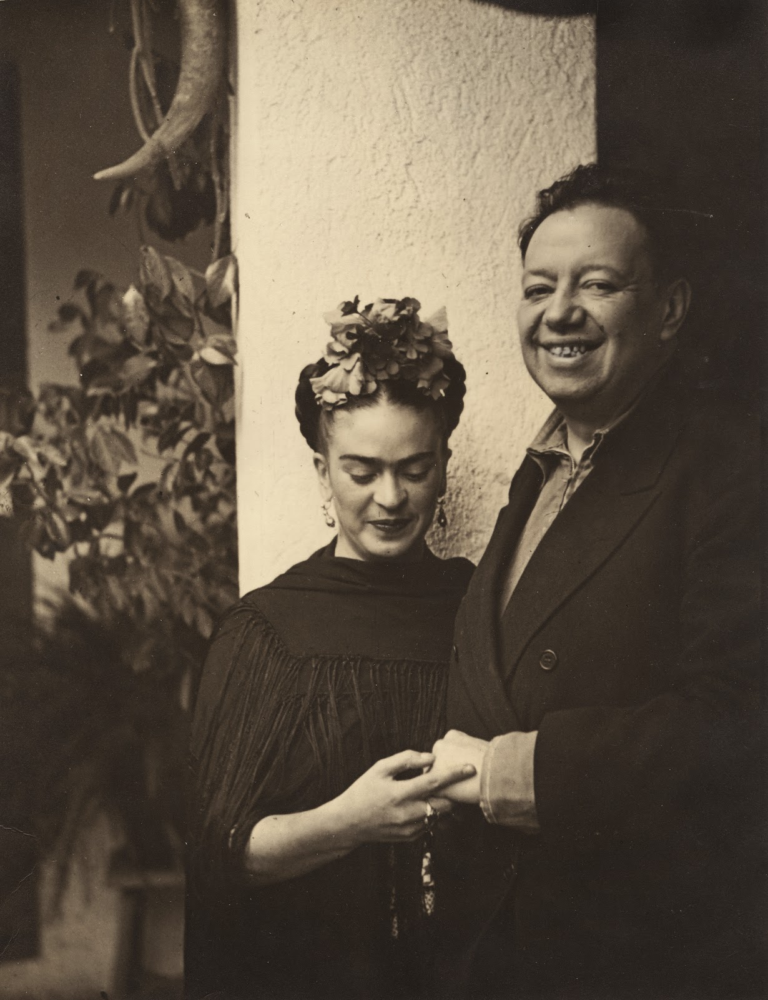
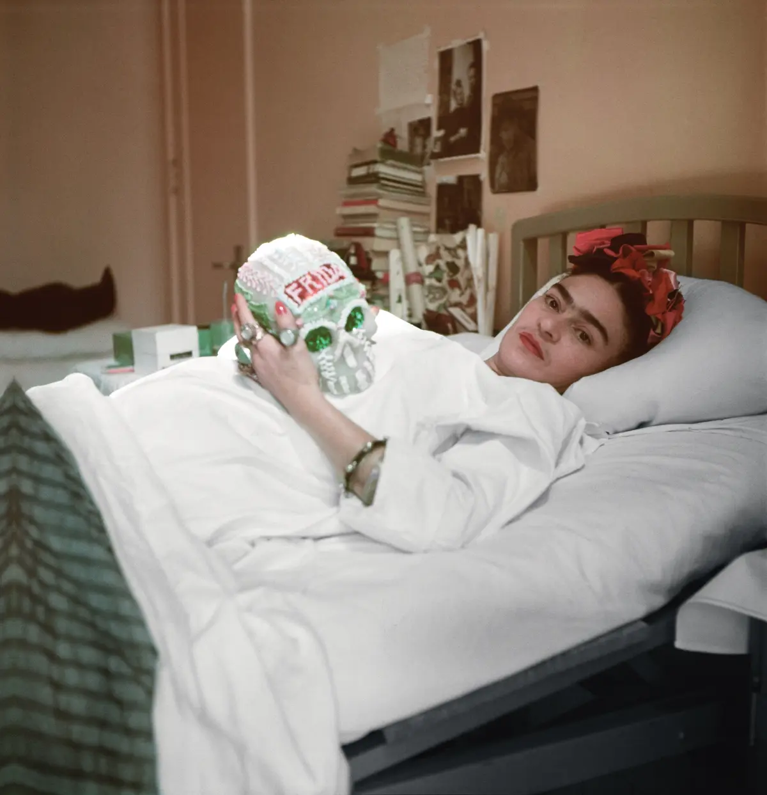
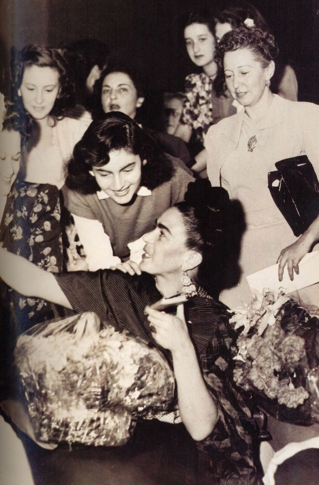
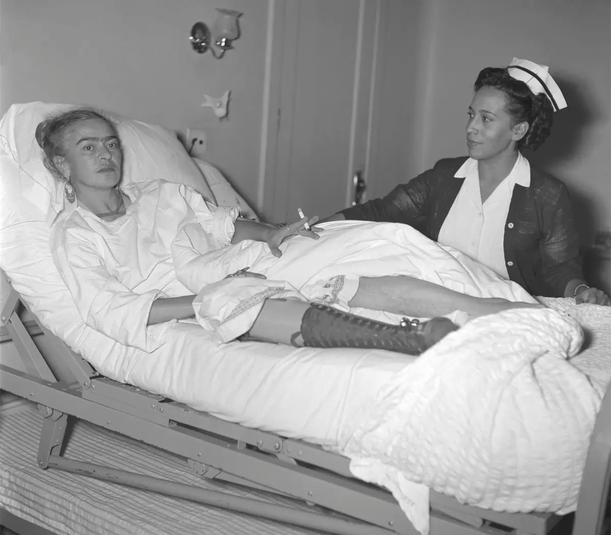

Frida Kahlo's encounter with polio at the age of six profoundly shaped her perception of herself and the world around her. Polio, a highly contagious viral infection, left her with a noticeable limp in her right leg, a constant reminder of her physical vulnerability. This early experience with illness and disability not only affected Kahlo's mobility but also had a profound psychological impact on her self-esteem and sense of identity. Growing up with a visible disability in a society that often stigmatized and marginalized those who were different, Kahlo struggled to find acceptance and belonging.
For Kahlo, polio was more than just a physical ailment; it was a defining aspect of her identity and a source of both pain and resilience. Throughout her life, Kahlo grappled with feelings of inadequacy and insecurity stemming from her disability, yet she also found strength and empowerment in embracing her unique perspective and lived experience. Her art became a means of reclaiming her body and asserting her agency, challenging societal norms and redefining beauty on her own terms.
In her self-portraits, Kahlo often depicted her physical disabilities with unflinching honesty, refusing to conceal or minimize her limp or other bodily imperfections. Instead, she used her art to confront and transcend the limitations imposed by her disability, transforming her pain into power and her vulnerability into strength. Through her bold and uncompromising self-representation, Kahlo challenged conventional notions of beauty and perfection, advocating for greater acceptance and understanding of difference.
In many ways, Kahlo's experience with polio laid the groundwork for her later artistic exploration of themes such as pain, resilience, and identity. It instilled in her a deep empathy for the marginalized and the oppressed, shaping her commitment to social justice and her advocacy for the rights of the disabled. Ultimately, Kahlo's encounter with polio not only informed her art but also fueled her determination to confront adversity with courage and creativity, leaving an indelible mark on the world of art and beyond.

On September 17, 1925, Frida Kahlo's life was forever altered by a tragic bus accident that would leave an indelible mark on her physical and emotional well-being. At the age of 18, Kahlo was traveling home from school when the bus she was riding collided with a trolley car. The accident resulted in devastating injuries, including fractures to her spine, pelvis, ribs, and leg. Kahlo's body was pierced by a metal handrail, leaving her in excruciating pain and fighting for her life.
The aftermath of the accident was marked by months of grueling medical treatment, surgeries, and rehabilitation. Kahlo endured multiple operations to repair the extensive damage to her body, including the insertion of metal rods in her spine and pelvis. She spent long periods immobilized in body casts, enduring agonizing pain and grappling with the uncertainty of her future. It was during this time of physical suffering and confinement that Kahlo turned to art as a means of coping with her trauma and reclaiming her sense of self.
The bus accident not only left Kahlo with debilitating physical injuries but also deeply affected her psychological and emotional well-being. She experienced profound feelings of isolation, depression, and despair as she struggled to come to terms with the permanent changes to her body and the uncertainty of her future. The accident shattered Kahlo's dreams of becoming a doctor and forced her to confront her mortality at a young age.
Despite the profound challenges posed by the accident, Kahlo's resilience and determination to overcome adversity were evident in her artistic response to her trauma. She channeled her pain and anguish into her paintings, using art as a form of therapy and self-expression. Kahlo's iconic self-portraits, with their raw emotion and unflinching honesty, served as a testament to her strength and resilience in the face of unimaginable adversity.
The bus accident became a defining moment in Kahlo's life, shaping her artistic identity and influencing the themes and imagery of her work. Throughout her career, Kahlo would return time and again to the symbolism of the accident, using it as a metaphor for her ongoing struggles with pain, identity, and mortality. By transforming her trauma into art, Kahlo not only found healing and solace but also forged a powerful legacy that continues to inspire audiences around the world.

In 1929, Frida Kahlo entered into a passionate and tumultuous marriage with the renowned Mexican muralist Diego Rivera. Their union was marked by intense love, creative collaboration, and emotional turbulence, as they navigated the complexities of their personal and professional lives together. Kahlo and Rivera's relationship was characterized by a deep bond forged through their shared passion for art, politics, and Mexican culture, as well as their mutual admiration for each other's talents.
From the outset, Kahlo and Rivera's relationship defied societal conventions and expectations. Despite their stark age difference – Kahlo was 22 and Rivera was 42 at the time of their marriage – they shared a profound connection rooted in their shared artistic vision and revolutionary spirit. Their union brought together two larger-than-life personalities, each with their own strengths, weaknesses, and eccentricities.
Throughout their marriage, Kahlo and Rivera experienced highs and lows, triumphs and challenges, as they navigated the complexities of love, desire, and fidelity. Their relationship was marked by periods of intense passion and creativity, as well as bouts of jealousy, infidelity, and emotional turmoil. Rivera's reputation as a notorious womanizer and his numerous affairs tested Kahlo's loyalty and resilience, yet she remained devoted to him despite the heartache and betrayal.
Despite the personal challenges they faced, Kahlo and Rivera's marriage was also marked by profound artistic collaboration and mutual influence. They shared a studio space in Mexico City's San Angel Inn, where they worked side by side on their respective projects, offering each other feedback, encouragement, and support. Kahlo's presence in Rivera's murals and her incorporation of his imagery into her own paintings underscored the intertwined nature of their artistic practices and their shared commitment to Mexicanidad – the celebration of Mexican culture and identity.
Their marriage became a source of inspiration and subject matter for Kahlo's art, as she explored themes of love, desire, and betrayal in her paintings. Her iconic self-portraits often depicted her complex emotions and inner turmoil, offering a glimpse into the inner workings of her troubled marriage. Despite the challenges they faced, Kahlo and Rivera's bond remained unbreakable, enduring until Kahlo's untimely death in 1954.
In many ways, Kahlo and Rivera's marriage symbolized the union of two iconic figures in Mexican art and culture, whose passion, creativity, and resilience left an indelible mark on the world of art and beyond. Their relationship continues to fascinate and inspire audiences around the world, offering a glimpse into the complex interplay of love, art, and identity in the lives of two extraordinary individuals.

Frida Kahlo's exhibitions in the United States and Europe marked a pivotal moment in her career, propelling her into the international spotlight and solidifying her reputation as one of the most innovative and influential artists of the 20th century. These exhibitions introduced Kahlo's unique artistic style and vision to a global audience, garnering widespread acclaim and recognition for her bold and uncompromising self-portraits.
In 1938, Kahlo's paintings were featured in a solo exhibition at the Julien Levy Gallery in New York City, marking her debut in the American art scene. The exhibition, titled "Frida Kahlo: Paintings," showcased a selection of Kahlo's most iconic works, including self-portraits, still lifes, and symbolic compositions. Audiences were captivated by Kahlo's raw emotion, vivid imagery, and unflinching honesty, which challenged conventional notions of beauty, femininity, and identity.
The following year, Kahlo's work crossed the Atlantic to Europe, where it was met with equal enthusiasm and acclaim. Her paintings were showcased in exhibitions in major cities such as Paris, Amsterdam, and London, attracting attention from art critics, collectors, and curators. Kahlo's bold use of color, symbolism, and autobiographical storytelling resonated deeply with European audiences, who were drawn to the authenticity and intimacy of her artistic vision.
These exhibitions not only showcased Kahlo's artistic talent but also positioned her as a cultural ambassador for Mexico and Mexicanidad – the celebration of Mexican culture and identity. Kahlo's incorporation of indigenous imagery, folklore, and symbolism in her paintings reflected her deep connection to her homeland and her commitment to preserving its rich cultural heritage. Her embrace of traditional Mexican dress and adornments further emphasized her cultural pride and defiance of Western norms and conventions.
Kahlo's exhibitions in the United States and Europe also served as a platform for her to engage with broader political and social issues, including feminism, indigenous rights, and anti-fascism. Through her art, Kahlo challenged patriarchal norms and advocated for gender equality, depicting herself as a strong and empowered woman who defied societal expectations and embraced her own agency.
Ultimately, Kahlo's exhibitions in the United States and Europe were a testament to the universal appeal and enduring relevance of her art, which continues to resonate with audiences around the world. By sharing her personal struggles, triumphs, and dreams through her paintings, Kahlo transcended cultural and geographical boundaries, leaving an indelible mark on the history of art and inspiring generations of artists and activists to come.

The dissolution of Frida Kahlo and Diego Rivera's marriage in 1939 marked a tumultuous and emotionally charged chapter in their tumultuous relationship. The divorce was prompted by Rivera's affair with Kahlo's younger sister, Cristina, which shattered Kahlo's trust and left her devastated. The betrayal struck at the heart of Kahlo's deepest insecurities and vulnerabilities, leading to a rupture in their marriage that would have profound consequences for both artists.
For Kahlo, the divorce represented a painful reckoning with the reality of Rivera's infidelity and the limitations of their relationship. Despite their intense love and creative collaboration, Kahlo could no longer ignore the betrayals and conflicts that had plagued their marriage for years. The affair with her sister was the final straw, forcing Kahlo to confront the harsh truths about Rivera's character and their irreconcilable differences.
The divorce also marked a period of profound personal and artistic transformation for Kahlo, as she sought to redefine herself outside of her role as Rivera's wife and muse. No longer content to be overshadowed by her husband's larger-than-life personality and reputation, Kahlo asserted her independence and autonomy, forging her own path as an artist and a woman.
Kahlo's post-divorce period was characterized by a newfound sense of liberation and self-discovery, as she explored new artistic themes and styles that reflected her evolving identity and perspective. Her paintings during this time became increasingly introspective and introspective, delving into themes of loneliness, longing, and resilience in the face of heartbreak.
Despite the end of their marriage, Kahlo and Rivera remained connected by their shared history and mutual respect for each other's talents. They continued to support each other's artistic endeavors and maintained a complex and enduring friendship that transcended the boundaries of romance and partnership.
In many ways, Kahlo's divorce from Rivera represented a turning point in her life, as she embraced her newfound freedom and independence with courage and determination. The dissolution of their marriage was a painful but necessary step on Kahlo's journey toward self-acceptance and empowerment, allowing her to emerge stronger and more resilient than ever before.

Throughout the 1940s, Frida Kahlo's health deteriorated rapidly as she grappled with chronic pain, medical complications, and a series of debilitating surgeries. The physical toll of her bus accident in 1925, combined with her lifelong struggle with various medical conditions, including polio and spinal deformities, took a severe toll on Kahlo's well-being and quality of life.
Kahlo's health issues intensified in the 1940s, leading to increasingly frequent and invasive surgeries aimed at relieving her chronic pain and improving her mobility. She underwent numerous operations on her spine, leg, and reproductive organs, including spinal fusion surgery, hip replacement, and a total of 35 surgeries on her back alone. Each surgery brought with it the risk of complications and the prospect of prolonged recovery periods, further exacerbating Kahlo's physical and emotional suffering.
Despite the pain and uncertainty she faced, Kahlo remained remarkably resilient in the face of adversity, drawing on her inner strength and determination to endure each surgical procedure and medical setback. Her unwavering commitment to her art provided solace and purpose during times of distress, as she channeled her pain and anguish into her paintings with unflinching honesty and raw emotion.
Kahlo's self-portraits during the 1940s became increasingly introspective and introspective, reflecting her heightened awareness of her own mortality and the fragility of the human body. Themes of pain, suffering, and mortality pervaded her artwork, as she grappled with the physical and emotional toll of her deteriorating health.
Despite her declining health, Kahlo continued to paint with passion and determination, refusing to let her physical limitations define her artistic legacy. Her paintings during this period served as a testament to her resilience and courage in the face of unimaginable adversity, inspiring audiences around the world with their raw emotion and unflinching honesty.
Ultimately, Frida Kahlo's health decline and surgeries during the 1940s were a testament to her strength and resilience in the face of overwhelming challenges. Despite the pain and suffering she endured, Kahlo's indomitable spirit and unwavering commitment to her art continue to inspire generations of artists and admirers, ensuring that her legacy endures long after her passing.

Frida Kahlo's solo exhibition in Mexico City in 1953 marked a triumphant moment in her career and a poignant celebration of her artistic legacy. Titled "Frida Kahlo: 20 Obras de Gran Formato" ("Frida Kahlo: 20 Large-Format Works"), the exhibition showcased a selection of Kahlo's most significant paintings, offering viewers a comprehensive overview of her distinctive artistic style and thematic preoccupations.
The exhibition was held at the Galería de Arte Contemporáneo in Mexico City, a prestigious venue that underscored Kahlo's status as one of Mexico's most celebrated artists. Despite being bedridden due to illness, Kahlo insisted on attending the opening reception of the exhibition, demonstrating her unwavering commitment to her art and her enduring connection to her audience.
The paintings featured in the exhibition spanned Kahlo's entire career, from her early self-portraits to her later, more introspective works. Each painting offered a window into Kahlo's complex inner world, exploring themes of identity, pain, love, and mortality with unflinching honesty and raw emotion.
One of the highlights of the exhibition was Kahlo's iconic self-portraits, which served as a testament to her unparalleled skill as a painter and her unyielding commitment to self-expression. From her haunting portrayal of physical pain in "The Broken Column" to her defiant assertion of identity in "Self-Portrait with Thorn Necklace and Hummingbird," Kahlo's self-portraits captivated viewers with their raw emotion and intimate portrayal of the artist's psyche.
In addition to her self-portraits, the exhibition also featured a selection of Kahlo's symbolic and allegorical works, which explored themes of Mexicanidad, indigenous culture, and political activism. Paintings such as "The Two Fridas" and "My Birth" showcased Kahlo's mastery of symbolism and her ability to weave personal and universal narratives into her art.
The significance of Kahlo's solo exhibition in Mexico cannot be overstated. For Kahlo, who had long struggled for recognition and acceptance in the male-dominated art world, the exhibition represented a validation of her talent and a celebration of her unique artistic voice. It was a moment of triumph for Kahlo, who had overcome immense personal and physical obstacles to share her art with the world.
Beyond its artistic significance, Kahlo's solo exhibition in Mexico also had profound cultural and political implications. At a time when Mexico was undergoing profound social and political change, Kahlo's art served as a powerful symbol of national identity and resistance. Her unapologetic celebration of Mexican culture and heritage resonated deeply with audiences, inspiring a new generation of artists and activists to embrace their cultural roots and challenge the status quo.
In many ways, Frida Kahlo's solo exhibition in Mexico was a crowning achievement in her career, affirming her status as one of the most influential and iconic artists of the 20th century. It was a testament to Kahlo's enduring legacy and her ability to transcend the limitations of her own time, inspiring audiences around the world with her timeless art and indomitable spirit.

Frida Kahlo's passing on July 13, 1954, marked the end of an era and a tragic loss for the world of art and culture. Her death at the age of 47 was a devastating blow to her family, friends, and admirers, who mourned the loss of a visionary artist, a fearless activist, and an icon of resilience and strength.
The official cause of Kahlo's death was listed as pulmonary embolism, a sudden blockage of an artery in the lungs. However, the circumstances surrounding her passing remain shrouded in mystery and speculation. Some biographers and historians have suggested that Kahlo may have taken her own life, driven to despair by chronic pain, illness, and emotional turmoil.
Throughout her life, Kahlo had grappled with physical and emotional suffering, stemming from a series of devastating health conditions, including the lasting effects of a childhood bout of polio, the injuries sustained in a traumatic bus accident, and numerous surgeries to address chronic pain and mobility issues. Her paintings often served as a means of processing her pain and trauma, offering a window into her innermost thoughts and emotions.
Despite her struggles, Kahlo remained fiercely determined to pursue her artistic vision and make her mark on the world. Her indomitable spirit and unwavering commitment to her art inspired countless individuals, particularly women and marginalized communities, to embrace their own identities and assert their agency in the face of adversity.
Kahlo's death was met with an outpouring of grief and tributes from around the world. Her funeral procession in Mexico City drew thousands of mourners, who paid their respects to the iconic artist as she was laid to rest. In the years following her passing, Kahlo's legacy only continued to grow, as her paintings gained newfound recognition and appreciation for their groundbreaking exploration of identity, politics, and human suffering.
Today, Frida Kahlo is remembered not only as a pioneering artist but also as a symbol of resilience, empowerment, and cultural pride. Her life and work continue to inspire generations of artists, activists, and admirers around the world, reminding us of the transformative power of art to heal, to provoke, and to transcend the boundaries of time and space. Though she may be gone, Frida Kahlo's spirit lives on in the hearts and minds of all who have been touched by her extraordinary legacy.